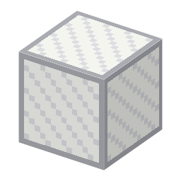

説明
①子ども 天井に並べて、きれいな空気を上から下へ流す吹き出し口。
②学生 HEPA フィルター＋鉄×2 → 2つ。囲まれた部屋の天井に並べ、HEPA フィルター入りの空調機を部屋に置いて動かすとクリーンルーム。天井の 80％以上がこれならクラス100 相当、25％以上ならクラス1000 相当。部屋の中のマスクアライナーで焼いた板は汚れにくい（外だと汚れ+2）。
③大人 1962年、アメリカのサンディア研究所のホイットフィールドは、天井全体の HEPA から床へ一方向に空気を流してほこりを押し流す「層流クリーンルーム」を考え、部屋のほこりを何百分の1にした。
④ガチ クリーンルームの等級は、空気 1 立方フィートの中の 0.5µm 以上の粒の数（クラス100＝100個以下、米国連邦規格 209、1963）。今の半導体工場は、手術室より何千倍もきれい。人が一番のほこりの元なので、全身を覆う服（クリーンスーツ）を着る。
作り方
使い道
（このアイテムを使うレシピは無い）